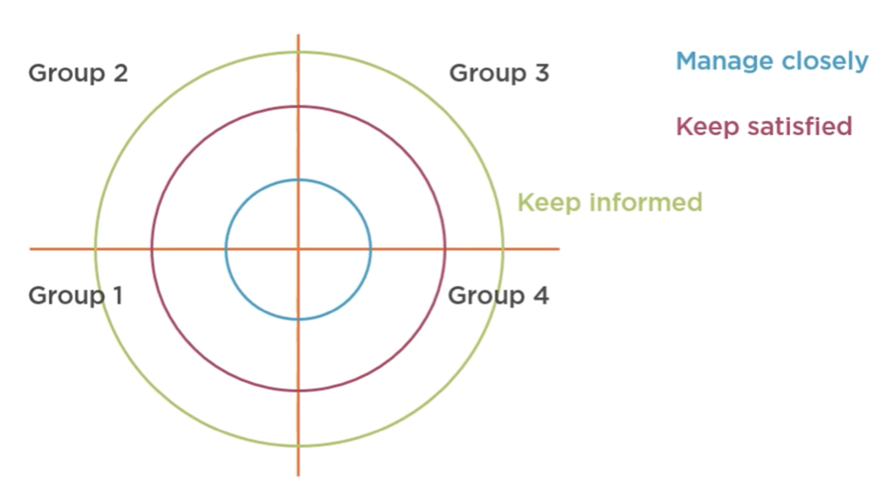
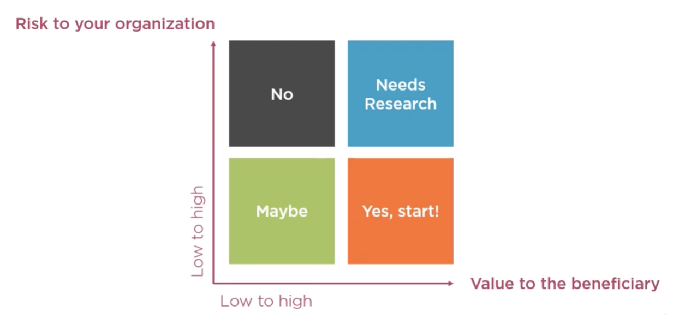

Stakeholder Mapping
Deveop a shared understanding of who in and ourside your organisation and team needs to be keep in the loop by mapping stakeholders into groups and defining touchpoints.
- 1 hour workshop
- Brainstorm and align on the stakeholders for a new project
- Priorities stakeholders into groups: Manage closely, keep satisfied, keep informed
- Align on the best methods to keep stakeholders engaged
Suggested Attendees
UX Team
- Project Lead
- UX Researcher
Clients
- Product Owner
- Additional team members
Other
- Project Management / Delivery Lead
- Engineering Lead
- Marketing Lead
- Optional: High-level decision makers
Preparation
- Agree with the team ahead of time which dimensions of the project to map stakeholders for
- Product / Service
- Brand
- Marketing
- Events
- Campaigns
- Create pre-workshop list of any stakeholders
- Collect the following materials
- Flip-charts
- Post-it notes, 3 colours (Manage closely, Keep satisfied, Keep informed)
- Camera for documentation
- Decide on what the best outcome and documentation format would be for this workshop
Workshop Agenda
- Welcome and introductions
- Goal and objectives
- Create list of stakeholders by dimensions individually
- Product / Service
- Brand
- Marketing
- Events
- Campaigns
- Internal Teams
- External Teams
- Beneficiaries
- Share the lists of stakeholders with other groups
- Create combined list on a single board
- Briefly discuss what each level or priority means
- Manage closely = invited to briefing, coffee chats etc
- Keep satisfied = Invitation to demos
- Keep informed = Weekly email update
- Prioritise combined list of stakeholders on a level of engagement map (see attachment)
- If there are multiple groups of stakeholders add a X-Y axis to the 3 rings
- Recap and Next Steps Overview
Next Steps
- Share outcomes of the workshop with the larger team
- Include photographs
- Include digatised version/s of stakeholder map/s
Attachments

Download PDF - Comming Soon
Design Principles
Design Principles provide way to enhance usability, influence perception, increase appeal, make better design decisions, teach through design and create a product/service that is distinctly yours.
- 2 hour workshop
- Create a shared understanding of the benefits of Design Principles
- Examples of successful Design Principles in use
- Creation of the first draft of your Design Principles
Suggested Attendees
UX Team
- Project Lead
- UX Researcher
Clients
- Product Owner
- Additional team members
Other
- Project Management / Delivery Lead
- Engineering Lead
- Marketing Lead
- Brand Lead
- Optional: High-level decision makers
Preparation
- Research other companies’ Design Principles
- Create at least 30 cards from a diverse number of companies' Design Principles
- Paticipants will work in groups of 3 for this workshop
- Create a set of these cards for every group in the workshop
- Collect the following materials
- Flip-charts
- Dot for voting
- Camera for documentation
- Decide on what the best outcome and documentation format would be for this workshop
Workshop Agenda
- Welcome and introductions
- Goal and objectives
- Benefits of Design Principles
- Enables consistent and fast decisions
- Resolve disagreements
- Educate new team members / stakeholders
- Create a team culture
- Inspiration
- Useful Design Principles are...
- Easy to remember and understand (short title, short description)
- Can be used to guide decisions
- Inspired the teams
- Reflects the company or organisation goals and values
- Share Best Practice Examples
- Design Principle Creations
- In groups of 3, discuss the cards and they importance to the team / project
- Prioritise the top 5 and rewrite them as needed
- Each team should present their top 5
- Alignment on the initial Design Principles
- Dot voting on all teams top 5 principles
- Analyze the top voted cards
- Select the core design principles
- Recap and Next Steps Overview
Next Steps
- Share outcomes of the workshop with the larger team
- Include photographs
- Include digital version or create a poster that can live in the common area
User Needs
‘User needs’ are the needs that a user has of a product or service, and that a product or service must satisfy for the user to get the right outcome for their task.
As a [user group]
I need / want / expect to… [what does the user want to do?]
So that… [why does the user want to do this?]
- 2 hour workshop
- Introduces and familiarises user needs, user groups to all stakeholders
- Grouping and prioritisation of user needs by cross-disciplinary workshop groups
- Alignment via presentation and re-prioritisation as needed between workshop groups
- Outcome: Alignment of what should be worked in the first sprint
Suggested Attendees
UX Team
- Project Lead
- UX Researcher
Clients
- Product Owner
- Additional team members
Other
- Project Management / Delivery Lead
- Engineering Lead
- Marketing Lead
- Optional: High-level decision makers
Preparation
- Collect as many user needs as possible via suitable UX research methods
- Write all user needs on cards - one set for each workshop group
- Decide on which user group/s you are prioritising in this workshop
- Collect the following materials
- Flip-charts
- Dot for voting
- Camera for documentation
- Decide on what the best outcome and documentation format would be for this workshop
Workshop Agenda
- Welcome and introductions
- Goal and objectives
- Familiarisation with user needs
- Break into groups (if necessary). Groups should each have one stakeholder type
- One person per group should read out the user needs
- Ask questions if needed
- Group user needs by themes (max. 4)
- Create names for each theme
- Do not order or prioritise yet
- Share the theme with other groups
- Each team should present the themes they created
- Identify the common themes and outliers
- Align on which 4 themes should be set across all groups
- Prioritisation of user needs by theme
- Each team should prioritise needs by theme
- Share the prioritisation with the other groups
- Each team should present the prioritisation
- Identify the common prioritisation and outliers
- Align on what the prioritisation is across all groups
- Recap and Next Steps Overview
Next Steps
- Share outcomes of the workshop with the larger team
- Include photographs
- Include digital version or create a poster that can live in the common area
- Run more workshops as needed for all user groups
- Use prioritisation to define first sprint tasks
Attachments

Download PDF - Comming Soon
Back to the homepage – Back to top